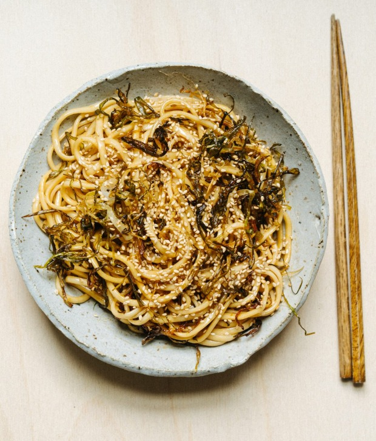

Spring Onion Oil Noodles

Ingredients
- 8 spring onions, washed and thoroughly dried, roots trimmed
- ½ cup neutral oil such as rice bran or sunflower
- 450g dried wheat noodles
- ½ tbsp soy sauce
- 1½ tbsp dark soy sauce
- 2-3 tsp sugar
- 1 tbsp toasted sesame seeds
Instructions
-
Cut the spring onion into 8cm-long pieces and keep white and green parts
separated. Cut into thin strips.
-
Place a large frypan on medium-low heat. Add the oil and white parts of
the spring onion and let them soften into the oil, about 5 minutes.
Add green parts of the spring onion and allow to cook on low heat for
25-35 minutes, stirring occasionally to prevent burning.
The
onions are ready when they are golden and crispy.
-
Meanwhile, bring a large pot of salted water to the boil. Add the
noodles and cook according to package instructions.
Drain and refresh under cold water to prevent the noodles from sticking.
Drain again and then place them into a large bowl.
-
Combine the soy sauce, dark soy sauce and sugar in a small bowl and stir
well until the sugar is dissolved.
-
Pour the spring onion oil over the noodles, along with the soy sauce
mixture. Toss to combine. To serve, sprinkle with sesame seeds.